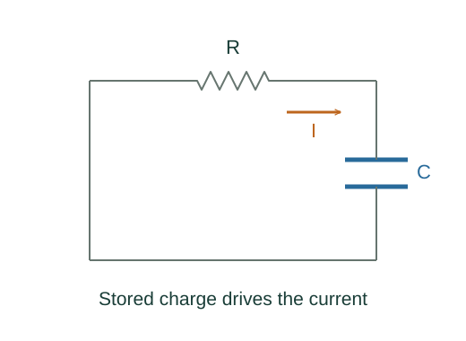

Derive terminal voltage, battery power and RC discharge
The loop contains drops IR and Ir. Rearrange the zero loop sum for current and the external terminal voltage.
What the symbols mean
ℰ: source emf; r: internal series resistance; R: external resistance; q: signed capacitor plate charge.
When this applies
Ideal source plus internal ohmic resistance; separate RC discharge through a resistor with the source disconnected.

Balance source rise and series drops
The loop contains drops IR and Ir. Rearrange the zero loop sum for current and the external terminal voltage.
Multiply by current
The chemical power is emf times current. Internal resistive heating accounts for the difference between chemical power and power delivered at the terminals.
Remove the source in the RC loop
Using current into the chosen positive capacitor plate as dq/dt gives a negative charging-direction current during discharge.
Integrate the homogeneous equation
Separate dq/q = −dt/(RC) and impose initial charge q₀. Differentiate to obtain signed current.
Where each equation comes from
Derived equations link to an argument below. Definitions, physical postulates and constitutive models are identified as the inputs of that argument.
Derivation of the main resultDerived result
Conditions: Ideal source plus internal ohmic resistance; separate RC discharge through a resistor with the source disconnected.
- Balance source rise and series drops. The loop contains drops IR and Ir. Rearrange the zero loop sum for current and the external terminal voltage. Explain the equation used in step 1 ↗
- Multiply by current. The chemical power is emf times current. Internal resistive heating accounts for the difference between chemical power and power delivered at the terminals. Explain the equation used in step 2 ↗
- Remove the source in the RC loop. Using current into the chosen positive capacitor plate as dq/dt gives a negative charging-direction current during discharge. Explain the equation used in step 3 ↗
- Integrate the homogeneous equation. Separate dq/q = −dt/(RC) and impose initial charge q₀. Differentiate to obtain signed current. Explain the equation used in step 4 ↗
Equation in step 1Derived result
What is being shown: Balance source rise and series drops
The loop contains drops IR and Ir. Rearrange the zero loop sum for current and the external terminal voltage.
Starting conditions and inputs: Ideal source plus internal ohmic resistance; separate RC discharge through a resistor with the source disconnected.
Equation in step 2Derived result
What is being shown: Multiply by current
The chemical power is emf times current. Internal resistive heating accounts for the difference between chemical power and power delivered at the terminals.
Earlier results used in this argument:
- ℰ − I(R + r) = 0; Vterminal = IR = ℰ − Ir (Derived result)
Equation in step 3Derived result
What is being shown: Remove the source in the RC loop
Using current into the chosen positive capacitor plate as dq/dt gives a negative charging-direction current during discharge.
Earlier results used in this argument:
- ℰ − I(R + r) = 0; Vterminal = IR = ℰ − Ir (Derived result)
- ℰI = I²r + Vterminal I (Derived result)
Equation in step 4Derived result
What is being shown: Integrate the homogeneous equation
Separate dq/q = −dt/(RC) and impose initial charge q₀. Differentiate to obtain signed current.
Earlier results used in this argument:
- ℰ − I(R + r) = 0; Vterminal = IR = ℰ − Ir (Derived result)
- ℰI = I²r + Vterminal I (Derived result)
- R dq/dt + q/C = 0 (Derived result)
A worked example
A 12 V emf with r = 1 Ω and external R = 5 Ω supplies 2 A and has terminal voltage 10 V.
Derivation behind this calculation ↗A point to keep straight
A charging battery has different current direction; keep a signed loop convention instead of blindly subtracting Ir.
Check the assumptions and derivation ↗